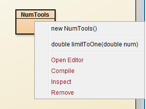
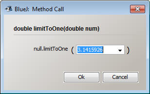
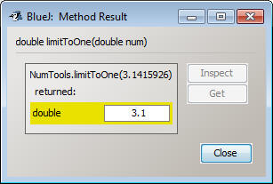

So far all of our programs have had a single main method that runs a series of commands. We've been relying on other methods, such as showInputDialog or parseInt, to complete part of our project but so far we haven't written a method that is helpful.
For this next assignment, you're going to write some utility methods. These methods aren't meant to be a whole program in one line, but to actually represent a single part of the program.
Example:
In the same project as your Math Programs, create a class named NumTools. Each of the parts of this assignment will ask you to add another method to this class. These methods will work a little differently. For these methods you should do no printing and no JOptionPane. Instead, these methods are going to get their input from the parameters and their output will be through a return statement.
I'll do the first one:
|
Create a method named limitToOne which will take in a double as a parameter. The method should return the double, but limited to only one decimal place. For example: |
First thing that we have to do is determine what the parameters and return type should be. In this case we are writing a methoud that takes in a double and returns a double as well. In your NumTools class, add the following method header which includes a double as a parameter and as the return type:
public static double limitToOne(double num)
{
}
When writing this style of method, my entire goal is to take my parameters and create an output with it. In this case the variable is called num. Here's the process that I am going to use:
Take the value of num: 3.213243
Multiply it by ten (moving the decimal):32.13243
Cast to an int: 32
Divide by 10: 3.2
Tadaa! The decimals have been casted away.
Make sure you follow the purpose of each step below and copy it to your NumTools class
public static double limitToOne(double num)
{
double large = num*10;
int casted = (int)large;
double retVal = casted/10.0;
return retVal;
}
Notice that the last line of the method has me returning the double retVal. Since this method's return type is a double, the last statement should be returning a double.
How do I test without JOptionPane and System.out.println!!!!
BlueJ has the ability to quickly test methods. Right clicking on the method will show us exactly the method that we just wrote:

You can see here that the method will require a double as a parameter. And that is why a little window pops up when you run the method:

This is the moment where you can test out what would happen if you put different values. In this example I've decided that the parameter should be 3.1415926
After hitting ok, the returned value is displayed in a different window:

3.1 is the value that I wanted. Hooray!!!